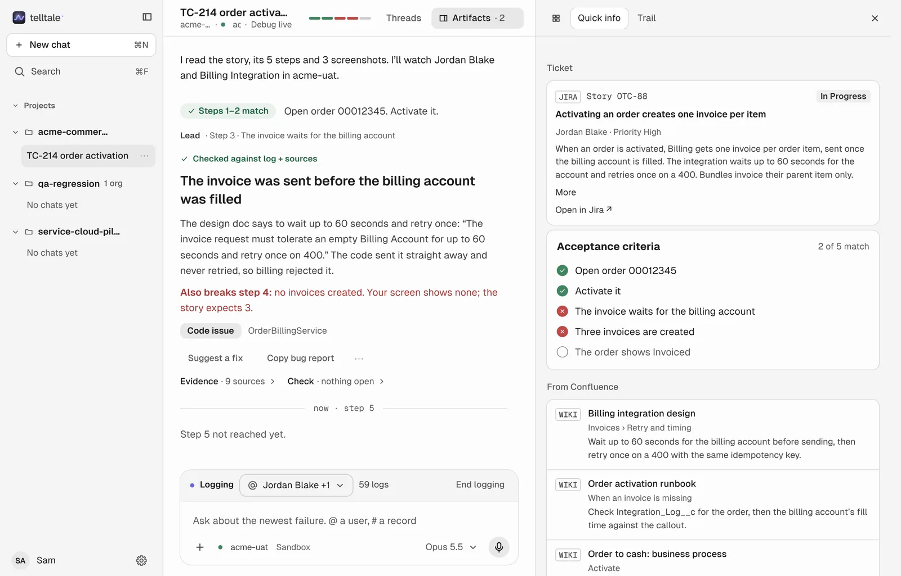

Guide · 2 of 5 · Find your way around
Written for Beta 1.8.1
Find your way around
One window, a few areas. Here is what each one is for.

Screens use made-up data.
- Sidebar: projects and chats
- New chat and Search
- Header buttons
- The chat
- The live logging line
- The reply box
- The right panel
- Settings
What each area does
1 and 2. The sidebar
Each project is a folder, with its chats under it. Chats without a project sit under Other chats. An indigo dot means a chat is logging. An amber dot means it needs your OK.
New chat starts a fresh one. Search filters your chats as you type. Press Return to search chats, archived chats and your org together. Old chats move to Archived after seven days. You can change that in Settings, and you can restore a chat from there any time.
3. The header
It shows the chat's title, its repo and org, and a live pill while logging runs. On the right are Threads, Artifacts and Share. Share appears once the chat has an answer.
4, 5 and 6. The chat and the reply box
Your lead answers with the finding first, then the evidence under it. While logging runs, a line above the reply box shows how many logs have arrived, with End logging.
The reply box has a + menu (a person, a record, logging, recording, photos and files), the org you are reading, the Reads pill, the model picker and a mic. Press Return to send and Shift + Return for a new line. When Telltale needs your OK, its question appears joined to this box.
7. The right panel
One panel with tabs. Press Esc to close it.
- Threads: each question your lead handed to a team member, and whether it is working, needs you or is done.
- Artifacts: everything the chat made or you attached. Logs, media, files, pages and docs have their own tabs.
- Quick info: the ticket attached to the chat and matching design docs.
- Trail: what happened, in order, with how the pieces connect.
Logs beside the chat, and the Timeline
Select the log count under an answer, or the failed count on the live line, to open the logs beside the chat. Pick a log to read it. While the Timeline is open, a Chat and Logs switch appears in the header. The Timeline stitches every log of the chat into one picture of what ran, in what order.
8. Settings
Open it with the gear at the bottom of the sidebar, or press ⌘ ,. It slides over the app and saves as you make changes. This guide points you to the part you need, so there is no tour of it here.
Overlay pill and Quick ask
When you are in your browser reproducing a problem, you do not need to switch back. A small overlay pill floats over the browser while a chat is logging. It shows new failures, with Stop, Open in Telltale and Capture screen. Turn it off with Show overlay in Settings.
Quick ask opens a small box from any app. Type a note or a question and it goes into the running chat, or starts a new one. The shortcuts are on page 5.